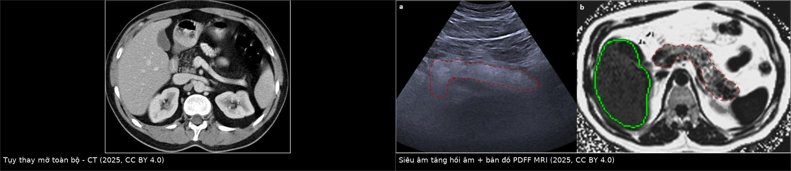
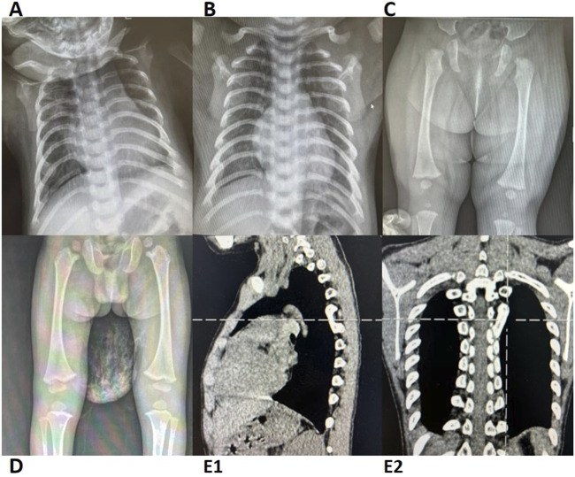
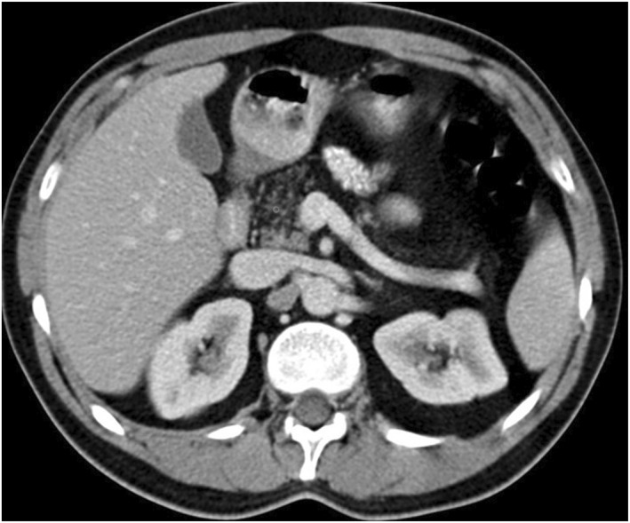
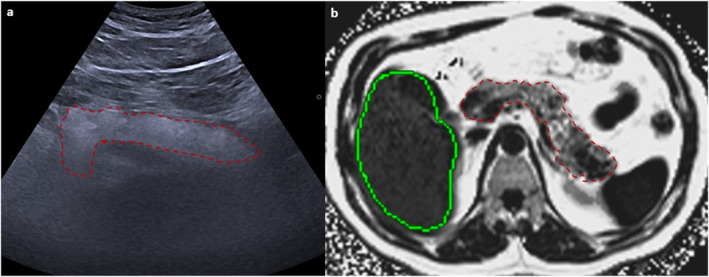

6170 — Hội chứng Shwachman–Diamond: tụy mỡ hóa + tủy giảm sinh + loạn sản metaphysis / Shwachman–Diamond syndrome
Tags: pattern:tuy-mo-hoa pattern:teo-tuy pattern:loang-xuong-metaphysis pattern:giam-sinh-tuy vung:tuy vung:xuong-dai score:PDFF protocol:MRI-in-out-phase
Mức chắc chắn (certainty): tổng hợp y văn (literature synthesis) — biên từ đoàn hệ 18 trẻ SDS (Frontiers in Genetics 2025, PMC12213692, CC BY 4.0), tổng quan SDS 2026 (PMID 42971867), GeneReviews SDS (PMID 20301722), đồng thuận quốc tế về tụy mỡ (J Gastroenterol Hepatol 2025, PMC12906299, CC BY 4.0) và đoàn hệ cytogenetic Ý 27 năm (PMID 42498179). Nhóm không có bệnh nhân của mình.
Câu chốt: SDS là bệnh của ribosome, không phải bệnh của tụy. Ba trụ cột — suy tụy ngoại tiết, giảm dòng tế bào tủy, loạn sản xương metaphysis — xuất hiện rất sớm (trung vị 1,5 tháng tuổi), nhưng hình ảnh không chẩn đoán được SDS: hình ảnh chỉ (1) phát hiện tụy thay mỡ, (2) đo mức loạn sản xương, và (3) loại trừ nguyên nhân khác. Chẩn đoán nằm ở elastase-1/trypsin + công thức máu + gen SBDS.
1. Tổng quan bệnh học – cơ chế hình ảnh (TẠI SAO)
1.1 Sinh lý bệnh: ribosome hỏng → ba mô cùng "thiếu tế bào"
- SBDS (và ít gặp hơn DNAJC21, SRP54, EFL1) mã hóa protein cần cho lắp ráp tiểu đơn vị 60S; đột biến → stress ribosome → tế bào có tốc độ tăng sinh cao (tụy ngoại tiết, tủy xương, sụn tiếp hợp) chết theo chương trình.
- Tụy: giảm sản/acinar hypoplasia — mô acinar (giàu protein, đậm độ cao) bị thay bằng mỡ, không có viêm, không sỏi, không giãn ống.
- Tủy: giảm sinh một hoặc nhiều dòng; giảm bạch cầu hạt trung tính gần như luôn có (liên tục hoặc từng đợt) → dễ nhiễm trùng; nguy cơ MDS/AML tăng (con số tích lũy khác nhau giữa các đoàn hệ — chưa có giá trị thống nhất, cần tra khi tư vấn).
- Xương: loạn sản sụn–xương metaphysis (metaphyseal chondrodysplasia) — đầu xương dài loe rộng, bờ nham nhở, sườn ngắn + đầu trước loe → lồng ngực hình thùng.
1.2 Cơ chế hình ảnh: tại sao "mỡ" chứ không phải "viêm"
- Mỡ trên CT: −10 đến −100 HU (mô mỡ); tụy bình thường 30–50 HU không cản quang. Tụy SDS giảm đậm độ gần bằng mỡ, kích thước nhỏ, không vôi hóa, không giãn ống tụy — đây là bộ ba "mỡ thay thế đơn thuần".
- Siêu âm: tụy tăng hồi âm (mỡ phản xạ mạnh) và nhỏ; dấu hiệu này không đặc hiệu (béo phì, corticoid, CF đều tăng hồi âm).
- MRI: mỡ T1 sáng, giảm tín hiệu trên chuỗi out-of-phase (do mỡ–nước cùng voxel); PDFF (proton density fat fraction) định lượng được % mỡ — hữu ích để theo dõi, không để chẩn đoán SDS.
- Xương: sụn tiếp hợp không khoáng hóa đúng → vùng metaphysis loang lổ, loe rộng; phim không cần cản quang, giá trị nằm ở vị trí và đối xứng.
- TẠI SAO quan trọng: ở trẻ tiêu chảy mỡ + chậm tăng cân, thấy tụy mỡ hóa không đồng nghĩa CF; và tụy bình thường trên hình ảnh không loại trừ SDS (mỡ thay thế có thể chưa hoàn toàn ở nhũ nhi).
1.3 Ngưỡng định lượng cần nhớ
- Tần suất: ≈ 1/75.000 – 1/170.000 trẻ sinh sống (ước tính khác nhau: 1/75.000–125.000 theo tổng quan 2026; 1/153.000–168.000 theo Minelli).
- Đột biến SBDS: > 90% ca; < 10% do DNAJC21/SRP54/EFL1.
- Tuổi khởi phát: trung vị 1,5 tháng (đoàn hệ 18 trẻ, PMC12213692).
- Tụy: đa số bệnh nhi có bất thường hình ảnh tụy (đoàn hệ trên: "tần suất cao"); trypsin giảm, elastase-1 phân thấp là xét nghiệm chốt chức năng.
- Tủy: giảm bạch cầu hạt gần như phổ biến; thiếu máu/giảm tiểu cầu gặp ở một phần ca.
- Xương: sườn ngắn + đầu xương loe là dấu hiệu cổ điển; chiều cao thấp hơn bách phân vị 50 theo tuổi (đường cong SDS riêng, PMC13244479).
2. Mẫu hình + chẩn đoán phân biệt theo vị trí (gamut)
- Tụy mỡ hóa ở trẻ (fatty replacement): SDS · xơ nang (CF) · viêm tụy mạn/teo tụy · Johanson–Blizzard · Pearson · mỡ thay thế sau xạ/steroid/béo phì · lipomatous pseudohypertrophy.
- Tụy nhỏ + mỡ + KHÔNG vôi hóa/không giãn ống: SDS, CF giai đoạn sớm, teo do suy dinh dưỡng.
- Tụy nhỏ + vôi hóa + giãn ống: viêm tụy mạn (di truyền, CF muộn, tắc ống) — không phải SDS.
- Loạn sản metaphysis ở trẻ: SDS · loạn sản sụn metaphysis khác (Schmid, McKusick) · còi xương · loạn sản sụn–xương do hóa trị/xạ · bệnh xương do thận.
- Giảm dòng tế bào tủy + tụy: SDS · Fanconi anemia · anemia Diamond–Blackfan · bạch cầu hạt giảm bẩm sinh · nhiễm trùng/ thuốc.
3. Bảng so sánh phân biệt (ma trận đối chiếu)
| Thực thể (entity) | Hình ảnh điển hình | Chốt vào (rule-in) | Chốt loại (rule-out) | Gợi ý xác nhận |
|---|---|---|---|---|
| Shwachman–Diamond (SDS) | Tụy nhỏ, giảm đậm độ gần mỡ (−10 đến −100 HU), không vôi hóa, không giãn ống; sườn ngắn + metaphysis loe; tủy giảm sinh | Tụy mỡ + loạn sản metaphysis + giảm bạch cầu hạt + khởi phát < 6 tháng | Vôi hóa/giãn ống tụy → nghĩ viêm tụy mạn, không phải SDS | Elastase-1/trypsin + CTM + gen SBDS |
| Xơ nang (CF) | Tụy thay mỡ hoàn toàn, có thể nang nhỏ/vôi hóa muộn, giãn ống; phổi tắc nghẽn + xoang | Tổn thương phổi mạn + xoang + mồ hôi mặn | Không có bệnh phổi + không vôi hóa + sườn bình thường → nghĩ SDS | Test mồ hôi/CFTR (không dùng hình ảnh) |
| Viêm tụy mạn | Tụy teo + vôi hóa + giãn ống không đều, ống hẹp–giãn | Vôi hóa trong tụy | Không vôi hóa, ống bình thường → ít nghĩ viêm mạn | MRCP/CT + di truyền PRSS1/SPINK1 |
| Mỡ tụy do béo phì/corticoid | Tụy giảm đậm độ lan tỏa nhưng kích thước bình thường, không loạn sản xương | Béo phì/steroid + hồi phục khi giảm cân/ngừng thuốc | Loạn sản xương + giảm dòng tế bào → không quy cho béo phì | Bệnh sử + theo dõi |
| Johanson–Blizzard | Tụy teo/mỡ hóa + bất sản cánh mũi + dị tật tai + suy giáp | Bất sản cánh mũi + điếc + dị tật răng | Mặt bình thường, chỉ tụy + tủy + xương → SDS | Khám dị tật + gen UBR1 |

Trái: CT bụng — tụy giảm đậm độ gần bằng mỡ, kích thước nhỏ, không vôi hóa. Phải: siêu âm tụy tăng hồi âm (a) và bản đồ PDFF MRI (b) với ROI đầu/thân/đuôi tụy. Ảnh ghép letterbox, giữ nguyên tỉ lệ — nguồn và giấy phép trongimages/CREDITS.md.
4. Protocol chụp + hệ phân độ/điểm chuẩn hóa
4.1 Trình tự hình ảnh (ALARA: siêu âm trước)
- Siêu âm bụng đầu tay: tụy tăng hồi âm, nhỏ, không sỏi/không giãn ống; đồng thời xem gan lách.
- MRI bụng khi cần định lượng mỡ: T1 in-phase/out-of-phase (mất tín hiệu out-of-phase = mỡ) + PDFF để đo % mỡ; MRCP nếu nghi giãn ống.
- CT bụng liều thấp chỉ khi MRI không khả dụng/trẻ quá nhỏ cần khảo sát nhanh; cửa sổ mô mềm, đo HU tại đầu/thân/đuôi.
- X-quang xương (ngực, xương đùi, đầu gối) để ghi nhận sườn ngắn, metaphysis loe; không cần khảo sát toàn bộ xương.
- Không có "điểm hình ảnh" chẩn đoán SDS — không có RADS/score riêng; PDFF là số đo liên tục, không phải phân độ.
4.2 Lộ trình chẩn đoán (hình ảnh đứng ở đâu)
flowchart TD
A[Trẻ tiêu chảy mỡ + chậm tăng cân + giảm dòng tế bào] --> B[Elastase-1 phân + trypsin + CTM]
B -->|Bất thường| C[Siêu âm bụng: tụy tăng hồi âm, nhỏ]
C --> D[MRI T1 in/out phase + PDFF]
D --> E[CT liều thấp nếu không có MRI]
B --> F[X-quang sườn, xương đùi: metaphysis loe]
F --> G[Gen SBDS + DNAJC21/SRP54/EFL1]
G --> H{Đủ tiêu chuẩn SDS?}
H -->|Có| I[Theo dõi tủy định kỳ + tầm soát MDS/AML]
H -->|Không| J[Test mồ hôi/CFTR + nguyên nhân khác]
5. Biến thể bình thường và cạm bẫy
- Nhũ nhi khỏe mạnh có thể có tụy "sáng" hơn mỡ — tăng hồi âm nhẹ đơn thuần không đủ gọi bệnh lý.
- Tụy bình thường trên hình ảnh không loại trừ SDS, nhất là < 6 tháng khi mỡ thay thế chưa hoàn toàn; ngược lại mỡ thay thế không đồng nghĩa SDS.
- Béo phì/steroid gây mỡ tụy hồi phục — đừng gọi là "teo tụy" nếu kích thước bình thường và không có loạn sản xương.
- Vôi hóa tụy là dấu hiệu LOẠI SDS trên thực hành: thấy vôi hóa → nghĩ viêm tụy mạn/CF muộn.
- Loạn sản metaphysis sau hóa trị/xạ có thể giống SDS về hình ảnh xương — bệnh sử ung thư là chốt loại.
- Đừng chẩn đoán SDS bằng hình ảnh: thiếu giảm dòng tế bào hoặc gen thì chỉ nên mô tả "tụy mỡ hóa + loạn sản xương, cần đánh giá chuyên khoa".
6. Tự lượng giá — Blind Quiz
Ca 1 — Trẻ 8 tháng, tiêu chảy phân mỡ, nặng 6,2 kg (bách phân vị 3). Phim và CT xương:

- Gợi ý: bụng chướng nhẹ; bạch cầu hạt trung tính 0,6 × 10⁹/L.
- Hỏi: mô tả hai bất thường xương nổi bật? Chúng gợi ý nhóm bệnh nào? Cần xét nghiệm gì để chốt?
Bấm để hiện đáp án (findings + chẩn đoán)
- Dấu hiệu: lồng ngực hình thùng, sườn ngắn; đầu trước xương sườn loe rộng; metaphysis xương đùi/xương chày loang lổ, loe rộng đối xứng.
- Chẩn đoán: loạn sản sụn–xương metaphysis trong bối cảnh suy tụy ngoại tiết + giảm bạch cầu hạt → hội chứng Shwachman–Diamond.
- Chốt: elastase-1 phân/trypsin thấp + gen SBDS; hình ảnh chỉ định hướng, không chẩn đoán thay.
- Nguồn: Wei et al. 2025, Frontiers in Genetics, Fig. 1 (5 bệnh nhi SDS), PMC12213692, CC BY 4.0.
Ca 2 — Trẻ 3 tuổi, chậm tăng cân, phân mỡ. CT bụng có cản quang:

- Hỏi: đậm độ tụy khoảng bao nhiêu HU? Có vôi hóa hay giãn ống không? Ba chẩn đoán phân biệt và xét nghiệm chốt?
Bấm để hiện đáp án (findings + chẩn đoán)
- Dấu hiệu: tụy giảm đậm độ gần bằng mỡ (−10 đến −100 HU), nhỏ, không vôi hóa, không giãn ống; gan lách bình thường.
- Phân biệt: SDS, CF, mỡ tụy do béo phì/steroid; loại viêm tụy mạn vì không vôi hóa/không giãn ống.
- Chốt: elastase-1/trypsin + test mồ hôi + gen SBDS; hình ảnh không phân biệt được SDS với CF.
- Nguồn: đồng thuận tụy mỡ 2025, Fig. 5, PMC12906299, CC BY 4.0.
Ca 3 — Cùng bệnh nhi, siêu âm và bản đồ PDFF MRI:

- Hỏi: vì sao siêu âm thấy tụy sáng? PDFF dùng để làm gì, và có thay thế được sinh thiết/gen không?
Bấm để hiện đáp án (findings + chẩn đoán)
- Siêu âm: mỡ trong tụy phản xạ mạnh → tụy tăng hồi âm so với gan; dấu hiệu không đặc hiệu.
- PDFF: đo % mỡ trong ROI đầu/thân/đuôi — theo dõi mức mỡ và so sánh trước–sau, không chẩn đoán nguyên nhân và không thay thế elastase-1/gen.
- Chẩn đoán: tụy thay mỡ (gợi ý SDS trong bối cảnh phù hợp), cần gen SBDS.
- Nguồn: đồng thuận tụy mỡ 2025, Fig. 4, PMC12906299, CC BY 4.0.
Bài liên quan chéo
- 6168 – Suy tụy ngoại tiết ở trẻ & elastase-1 (CF, ngưỡng elastase-1, MRI Dixon)
- 6152 – Viêm tụy mạn ở trẻ (vôi hóa/giãn ống — chốt loại SDS)
- 6105 – Hoại tử xương ở trẻ điều trị ALL (loạn sản xương do điều trị)
- 6134 – Bệnh xương cứng di truyền (osteopetrosis) (xương đặc — phân biệt với loạn sản metaphysis)
Không dùng để chẩn đoán độc lập khi chưa có người hướng dẫn.